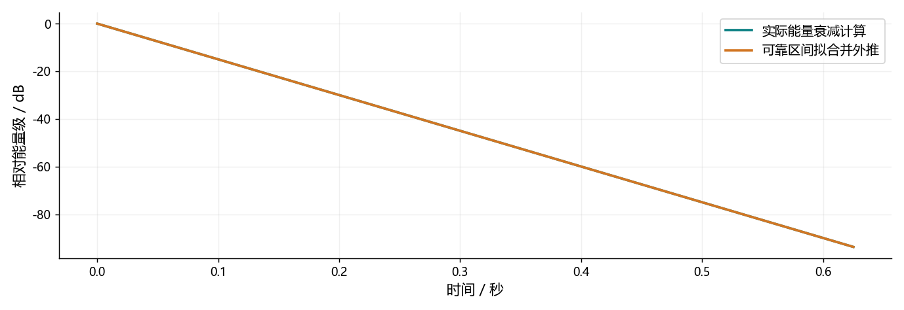

看图理解 · 跟着推演 · 对照真实结果
第11课 · 房间为什么会给声音加尾巴
用三条传播路径和一个实际衰减实验，讲清RIR、DRR、RT60及水声迁移。
文字和视频配合学，内容没有删减
上方“读完整图文”是本课完整教程，包含详细解释、公式、代码和练习；这里的视频讲解核心算例，不代替全部正文。可以先读再看，也可以看不懂时回到文字逐步推导。跟着视频暂停预测，解释运行图的横轴、纵轴和曲线，再做下面的自测。
先修：卷积、分贝和滤波器
- 把反射延迟从秒换算成采样
- 读懂能量衰减与RT60
- 分清PCM、声压级、AEC与ANC
跟着运行：注释代码、实际输出与结果图
下面代码在生成本站时实际执行。这里只是教学小实验，不是完整模型训练或业务设备测评。
import numpy as np
fs, target_rt60 = 16000, 0.4
# 理想指数只验证衰减计算，不是真实房间响应
t = np.arange(fs*2)/fs
h = np.exp(-3*np.log(10)*t/target_rt60)
# 反向累计平方：看每个时刻之后还剩多少能量
energy = np.cumsum(h[::-1]**2)[::-1]
edc_db = 10*np.log10(np.maximum(energy/energy[0], 1e-15))
valid = (edc_db <= -5)&(edc_db >= -35)
slope, intercept = np.polyfit(t[valid], edc_db[valid], 1)
fit_db = slope*t + intercept
estimated = -60/slope
print('斜率/dB每秒:', round(slope, 3))
print('外推RT60/秒:', round(estimated, 4))
print('三路径DRR/dB:', round(10*np.log10(1/(0.5**2+0.25**2)), 4))
本次实际输出
斜率/dB每秒: -150.0 外推RT60/秒: 0.4 三路径DRR/dB: 5.0515

闭卷自测：EDC可靠区间斜率−100 dB/s，外推RT60是多少？
−60/(−100)=0.6秒。前提是区间确实反映衰减，不是背景噪声平台。
逐字讲稿 · 可定位回看
在铺地毯的小房间和空走廊里拍手，声音尾巴往往不同。最先到达的是直达声，后面出现墙面等路径的早期反射，再往后很多反射叠在一起，形成稠密的混响尾部。
可以把反射想成延迟的小副本，但材料吸收随频率变化，位置和遮挡也会改变它。这个类比帮助理解时间关系，却不意味着每次反射都只是把整段音频乘同一个常数。
今天不需要制造很大的声音测房间。我们先用合成数组解释传播，再用能量衰减计算验证公式。模型算对和真实房间测准是两个不同验收阶段，不能只展示一条漂亮曲线就混为一谈。
如果把短时间内的房间近似成线性时不变系统，输出是输入与脉冲响应的卷积。脉冲响应简称 RIR，可以理解为这个位置组合对单位脉冲的反应，记录延迟和强弱。
这里的每个输入采样都会通过多条路径产生副本，许多副本再叠起来。不是只有一句话开头反射一次。卷积公式中的历史下标，就是把不同到达时间明确写进了计算。
移动麦克风、移动声源、开门或者换家具，都可能改变这条响应。所以 RIR 不是一间房间永远不变的身份证。真实测量通常用已知测试信号与辨识方法，也不需要追求无限短的巨大冲击。
先设置三个离散传播分量：直达系数一，延迟四百八十点的系数零点五，延迟一千二百点的系数零点二五。在十六千赫兹下，用点数除以采样率，分别得到三十和七十五毫秒。
横轴如果以直达声作为零点，不代表声音没有物理传播耗时，只是把共同到达偏移移除了。比较多个测量时必须说明有没有对齐，不能拿不同时间零点直接算路径距离。
三个脉冲本身互不重叠，能量可以按各自平方求和。换成一段语音卷积以后，副本可能重叠并产生相干交叉项，不能把三个系数平方和直接当成任意语音输出总能量。
直混比 DRR 问的是直达部分相对于反射部分有多少能量。在三个脉冲例子中，直达能量为一，反射能量是零点五平方加零点二五平方，等于零点三一二五。
一除以零点三一二五取十倍对数，约为五点零五分贝。幅值零点五那条路径的能量是零点二五，不能直接用零点五当功率。真实测量还要说明直达窗口如何划分。
RT60 则描述混响能量级衰减六十分贝需要多久，它不是直达占比。近一点录音可能提高直达比例，却不自动改变整个房间的衰减规律。这两个数字都要连同测量定义一起报告。
真实录音后面总有底噪，最后一个非零采样可能一直延续到文件结束，因此不能用它定义混响时间。更稳妥的思路是看每个时刻以后还剩多少响应能量。
我们先对脉冲响应平方，再从末尾向前累计，得到能量衰减曲线，简称 EDC。除以初始总能量之后取十倍对数，起点为零分贝，随后逐渐下降。
注意这和直接给每个采样幅值取对数不是一回事。累计曲线描述剩余能量的总体趋势，对它在可靠区间拟合斜率，才有理由外推下降六十分贝所需的时间。
假设可靠区间每秒下降一百五十分贝，斜率就是负一百五十，外推六十分贝需要零点四秒。负六十除以负斜率得到正时间，符号和单位都应能检查。
常见 T20 使用负五到负二十五分贝区间，T30 使用负五到负三十五分贝区间拟合，报告的通常仍是外推至六十分贝的时间。名称中的二十或三十表示拟合跨度。
如果底噪在负二十分贝附近已把曲线托平，就不能假装负三十五分贝仍然可信。真实数据还可能不同频带有不同斜率，选择区间、截断和噪声处理都会影响结果。
代码先指定预期时间零点四秒，用指数函数生成幅值包络。系数选成三倍自然对数十，使幅值在零点四秒降到千分之一，平方后的功率降到百万分之一，正好是负六十分贝。
接着反向累计平方并归一化，选取负五到负三十五分贝的点，用一次多项式拟合直线。时间数组单位是秒，所以斜率单位为分贝每秒，不需要再乘采样率。
最后把拟合线画到同一坐标中，并打印斜率与估计时间。这个全正指数序列只是验证计算，不含真实房间的随机反射结构，不能直接作为高真实性的房间数据增强素材。
图中一条曲线来自实际累计能量计算，另一条来自可靠区间拟合后的直线。它们在展示的主要衰减区间非常接近，打印斜率约负一百五十，估计时间约零点四秒。
这个结果并不惊人，因为生成函数和估计假设完全匹配。它的价值在于检查平方、累计方向、分贝换算与时间单位有没有写错，而不是证明算法已经战胜真实噪声和复杂房间。
下一次给尾部添加底噪，重新画曲线，观察哪里变平。不要挑一小段最直的点来掩盖问题，应说明选择依据。也不要把前面的三个脉冲当成这条指数曲线的输入，它们是两个独立模型。
WAV 中零点一只是数字幅值，dBFS 相对于数字满量程。实际声压级需要帕斯卡和参考压力，中间隔着麦克风灵敏度、前置放大、模数转换和软件增益，没有校准不能直接换算。
水声与空气都能使用卷积、谱估计和阵列方法，但声速、传播尺度和噪声分布不同。空气演示常取三百四十三米每秒，海水常见约一千五百的数量级，实际还受环境条件影响。
声压级的参考也不同，空气常用二十微帕，水下常用一微帕。因此不能把两个分贝数字直接当作同样的物理强弱或听感。你能迁移的是方法和实验习惯，不是所有参数与任务名字。
AEC 在数字录音里减掉预测回声，输出仍是要传输的音频。ANC 要用扬声器发出控制声，降低某个物理位置的声压，控制声还要经过功放、扬声器和传播，也就是次级路径。
因此直接播放负的噪声并不保证抵消，到耳边时可能已延迟变相，甚至加强噪声。FxLMS 更新会考虑次级路径估计。新手先做离线失配和延迟实验，不应直接接大音量设备尝试。
闭卷题：如果可靠斜率是负一百分贝每秒，外推 RT60 是多少？六十除以一百，得到零点六秒。今天留下这道手算、实际衰减图和模型边界说明，再回原课制定有校准链的测量方案。
适用边界与参考正文
理想全正指数与三脉冲算术教学，不是真实RIR测量；没有硬件ANC试验或声压安全结论。
图、公式、代码结果均由本站制作；旁白是本地中文语音合成，不是教师真人录音，也不是 NotebookLM 生成。没有向 Google 上传项目材料。